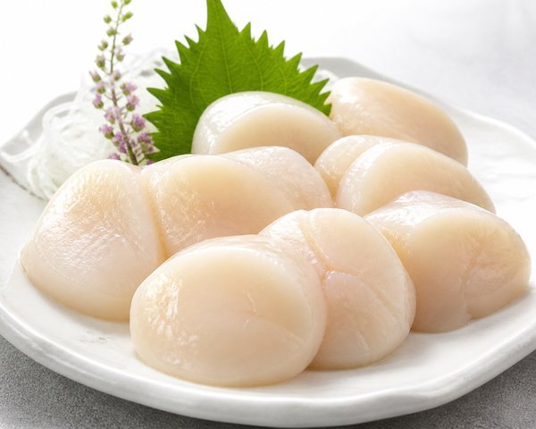
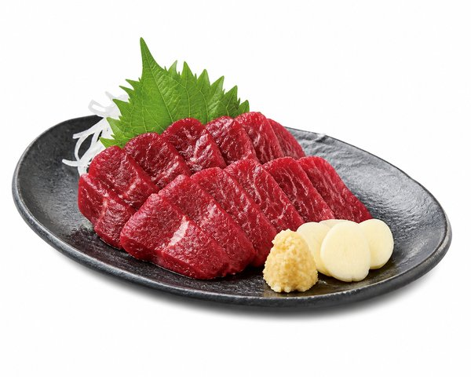
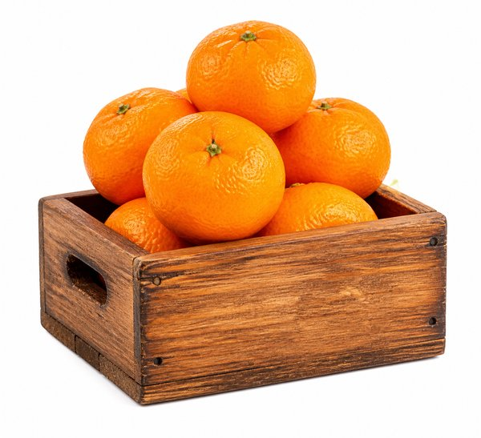
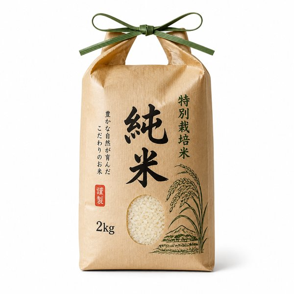
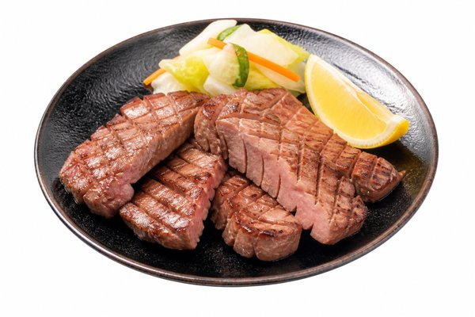

【2026年最新】ふるさと納税おすすめ返礼品ランキング10選！年末駆け込み特選グルメ
11月〜12月は、翌年の住民税控除枠を使い切るための「ふるさと納税の年末駆け込み特需」が最も盛り上がるシーズンです。
実質自己負担2,000円で全国の高級食材が手に入る制度ですが、「寄付金額とボリュームのバランスが良いものはどれ？」「届いてガッカリしたくない」という方も多いはず。
今回は、楽天ふるさと納税で数千件以上のレビューを集める超人気自治体の中から、還元率・味・保存のしやすさ・家族受けのすべてで満点を獲得した神グルメ10選をランキング形式でご紹介します。
- 一目でわかる！おすすめ10選の比較表
- BEST 1：オホーツク産ホタテ玉冷 1kg （大粒・急速冷凍）
- BEST 2：いくら醤油漬け （鮭卵・小分けパック）
- BEST 3：宮崎牛 切り落とし 1.5kg （A4〜A5等級）
- BEST 4：鉄板焼デミグラスハンバーグ 20個（特製ソース仕込み）
- BEST 5：カット生ずわい蟹 700g （ビードロカット加工）
- BEST 6：国産馬刺し 赤身スライス （50g×小分けパック）
- BEST 7：愛媛県八幡浜産 日の丸みかん 5kg（特選クラス）
- BEST 8：天然まぐろ 漬け丼の具 10食セット（特製タレ漬け）
- BEST 9：山形県産 はえぬき米 10kg （精米したてお届け）
- BEST 10：厚切り牛タン 1kg （スリット入り・塩味仕込み）
- まとめ：迷ったらコレを選べば間違いなし
| 順位 | 商品名 | カテゴリ | 最大の特徴・おすすめ理由 | 総合評価 |
|---|---|---|---|---|
| 01 | 北海道別海町 オホーツク産ホタテ玉冷 1kg | 海鮮・貝 | 肉厚大粒で濃厚！生食でお刺身やバター焼きに最高 | ★★★★★ 4.9 |
| 02 | 北海道白糠町 いくら醤油漬け 200g/400g | 海鮮・魚卵 | 大粒の秋鮭卵を秘伝タレで漬け込み！ご飯が止まらない | ★★★★★ 4.9 |
| 03 | 宮崎県都城市 宮崎牛切り落とし 1.5kg | 精肉・和牛 | A4〜A5等級の最高峰！すき焼きや牛丼で至福の味 | ★★★★★ 4.8 |
| 04 | 福岡県飯塚市 鉄板焼デミハンバーグ 20個 | 総菜・冷凍 | 温めるだけで肉汁が溢れる！冷凍庫にあると神の味方 | ★★★★★ 4.9 |
| 05 | 福井県敦賀市 カット生ずわい蟹 700g | 海鮮・蟹 | 殻カット済みで解凍後すぐ食べられる！冬の蟹鍋に最適 | ★★★★☆ 4.8 |
| 06 | 熊本県益城町 国産馬刺し赤身スライス | 精肉・馬肉 | 小分けパックで流水解凍5分！極上の晩酌おつまみ | ★★★★☆ 4.7 |
| 07 | 愛媛県八幡浜市 日の丸みかん 5kg | フルーツ | 糖度12度以上の圧倒的濃厚な甘み！ビタミン補給に | ★★★★★ 4.8 |
| 08 | 静岡県焼津市 天然まぐろ 漬け丼の具 10食 | 海鮮・丼 | 特製タレ漬けで解凍してご飯に乗せるだけ！手軽で美味 | ★★★★☆ 4.7 |
| 09 | 山形県天童市 はえぬき米 10kg/定期便 | 主食・米 | 冷めても美味しい山形の誇り！食費の直接節約に直結 | ★★★★★ 4.8 |
| 10 | 岩手県花巻市 厚切り牛タン 1kg | 精肉・牛タン | 極厚なのにサクッと柔らか！家庭で名店の味を再現 | ★★★★☆ 4.7 |

オホーツク産ホタテ玉冷 1kg （大粒・急速冷凍）
ふるさと納税海鮮部門で不動の人気を誇る、大粒プレミアムホタテです。極寒のオホーツク海で育ったホタテは繊維がぎっしり詰まり、噛むほどに濃厚な甘みが広がります。解凍してそのままお刺身、バター醤油焼き、フライなど使い勝手抜群です。
- 一粒一粒が個別急速冷凍（IQF）で必要な分だけ取り出せる
- 刺身で食べられる極上の鮮度と甘み
- 1kgの大容量で家族みんなで大満足
- 大人気のため年末は配送まで数週間かかる場合がある

いくら醤油漬け （鮭卵・小分けパック）
水揚げされたばかりの新鮮な秋鮭の卵を、職人秘伝の醤油ダレでじっくり漬け込んだ白糠町の看板返礼品です。皮が薄くとろけるような食感で、プチプチ弾ける旨味が白米と抜群に合います。贅沢ないくら丼が自宅で何杯も楽しめます。
- 鮭卵ならではの濃厚なコクと大粒の美しさ
- 使い切りやすい小分けパック（200g単位）で便利
- 秘伝醤油ダレの塩分濃度が絶妙で臭みゼロ
- 美味しすぎて一度に食べ過ぎてしまう贅沢な悩み

宮崎牛 切り落とし 1.5kg （A4〜A5等級）
和牛日本一に輝いた実績を持つ「宮崎牛」の極上切り落としです。切り落としとはいえ肉厚で美しいサシ（霜降り）が入っており、すき焼き、肉じゃが、牛丼、炒め物に使うと脂の甘みと香りが全体に行き渡ります。小分けパックで冷凍保存もしやすいです。
- A4〜A5ランクの最高級黒毛和牛が合計1.5kg届く圧巻のコスパ
- 脂の融点が低く、口の中でとろける柔らかさ
- 毎日の食卓が高級料亭の味にグレードアップ
- サシがしっかり入っているため赤身のみを好む方には濃厚

鉄板焼デミグラスハンバーグ 20個（特製ソース仕込み）
楽天ふるさと納税で常にランキング上位に君臨する大ベストセラーです。湯煎するだけで、ふっくら分厚いハンバーグから肉汁と濃厚な特製デミグラスソースが溢れ出します。忙しい日の晩御飯やお弁当のおかずに冷凍庫の救世主となります。
- 湯煎で温めるだけの超簡単調理で失敗知らず
- 1個約140gのボリュームで食べ応え抜群
- 20個入りで普段の食費を直接大幅に浮かせられる
- 20個届くため冷凍庫のスペースを事前に空けておく必要あり

カット生ずわい蟹 700g （ビードロカット加工）
冬の味覚の王様・ずわい蟹を、包丁やハサミを使わずに手軽に食べられるよう丁寧に殻を半分カット（ビードロカット）した人気返礼品です。年末年始の蟹鍋、焼き蟹、お刺身、天ぷらなど、特別な日のご馳走にピッタリです。
- 殻剥きの手間が不要で子供からお年寄りまで食べやすい
- 解凍してそのまま生食（刺身）も可能な抜群の鮮度
- 蟹鍋の出汁で作る最後の雑炊が絶品
- 加熱しすぎると身が縮んで硬くなるためサッと火を通すのがコツ

国産馬刺し 赤身スライス （50g×小分けパック）
熊本名物の馬刺しの中でも、最もヘルシーで旨味が凝縮された上赤身をスライスした状態でお届け。包丁いらずで流水解凍5分ですぐに食卓へ出せるため、仕事終わりの晩酌や急な来客のおもてなしに重宝します。特製甘口醤油との相性も抜群です。
- スライス済みなので解凍して盛り付けるだけで包丁・まな板不要
- 高タンパク・低カロリー・鉄分豊富でヘルシー
- 1回食べきりの50g小分けパックで鮮度長持ち
- 解凍後は時間をおかずにすぐ食べるのが美味しさの秘訣

愛媛県八幡浜産 日の丸みかん 5kg（特選クラス）
みかん王国・愛媛の中でも最高峰のブランド産地である八幡浜市の日づち地区で栽培された特選みかんです。急傾斜の段々畑で太陽の光と宇和海からの照り返しをたっぷり浴び、薄い内皮にジューシーで濃厚な甘酸っぱさが詰まっています。
- 外皮もじょうのう（内皮）も非常に薄くてそのままパクパク食べられる
- 糖度と酸味のバランスが黄金比でコクが深い
- こたつで家族みんなで楽しむ冬の定番フルーツ
- 生鮮果実のため到着後は風通しの良い涼しい場所で保管が必要

天然まぐろ 漬け丼の具 10食セット（特製タレ漬け）
日本屈指のまぐろの水揚げ港・焼津から届く、天然まぐろを特製醤油タレに漬け込んだ冷凍丼の具です。パックごと流水でサッと解凍して炊きたてご飯に乗せ、ネギやわさび、刻み海苔を添えるだけで極上の海鮮丼が完成します。
- 火を使わずに3分でプロの海鮮丼が完成する手軽さ
- 天然まぐろならではのモチモチとした食感と旨味
- 薄型パックで冷凍庫の隙間にすっきりストック可能
- タレ漬けのため刺身単体として楽しむより丼向き

山形県産 はえぬき米 10kg （精米したてお届け）
お米の価格が高騰する今、最も生活実利に直結するふるさと納税の定番です。「はえぬき」は粒立ちがしっかりしており、冷めても水分が抜けにくく甘みが続くため、お弁当やおにぎりにも最適。日々の主食費を直接節約できます。
- 重いお米を自宅の玄関まで届けてもらえる便利さ
- 一粒一粒にハリがあり噛むほどにお米本来の甘みが広がる
- 家計の固定費（食費）を直接浮かせられる抜群の家計貢献度
- 大袋のため開封後は密閉容器での保管がおすすめ

厚切り牛タン 1kg （スリット入り・塩味仕込み）
焼肉店で食べるような極厚カットの牛タンを、丁寧に切り込み（スリット）を入れて秘伝の塩ダレで仕込んだ名品です。フライパンで強火で焼くだけで、外は香ばしく中はサクッとジューシーな最高の歯ごたえを味わえます。
- 厚さ約10mmの圧倒的食べ応えとサクッとした柔らかさ
- スリット加工で火が通りやすく噛み切りやすい
- 味付け済みなのでフライパンで焼くだけで居酒屋クオリティ
- 焼きすぎると硬くなりやすいため強火でサッと焼き上げるのがコツ
まとめ：迷ったらコレを選べば間違いなし！
ふるさと納税の返礼品は、12月後半になると人気自治体の枠が上限に達し受付終了（品切れ）になることが多々あります。
特にホタテ、いくら、和牛、ハンバーグなどの定番人気品は冷凍保存も効くため、早めに枠を使い切っておくのが賢い年末の過ごし方です。今年頑張った自分やご家族へのご褒美に、ぜひ贅沢な返礼品を選んでみてください！